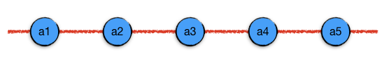

4.1. 线性表¶
所谓线性表，又叫线性存储数据结构，是指把元素按先后次序（注意不是大小顺序）一连串地存储在存储空间里的数据结构。直观的理解可以把元素看成是一个一个的串珠，这些串珠按次序串起来就形成了线性表。
由于线性表中元素的存储是有先后次序的，所以我们可以给每一个元素编号，然后按照编号一一对应地找到指定位置的元素，这个编号也叫做下标。另外还有两个术语需要知道，前驱表示某个元素的前一个元素；后继表示某个元素的后一个元素。线性表中的每一个元素，最多只能有一个确定的前驱，最多只能有一个确定的后继。
例如上面这个图中表示的线形表中，元素a3的前驱是a2，后继是a4。对于第一个元素a1，它的前驱是空元素，有时候我们喜欢按C语言的惯例把空元素写做 NULL。类似的，最后一个元素a5的后继是 NULL。
要知道，虽说线性表是把元素按次序组织成一连串的数据结构，但是实际的物理存储方式并不一定非要是连续的，只要在逻辑关系上它们是有次序的就可以。简单地说，不管元素在存储空间里是不是真正按次序并且紧挨着存放的，只要它能提供一种方法来准确地定位到每个元素的前驱和后继，我们就认为它是线性表。按照物理存储方式是否连续，线性表分为顺序存储结构（顺序表）和链式存储结构（链表）两大类，简称顺序表和链表。
按照访问元素规则的不同，又产生出两种特别常用又特别重要的线性表：栈和队列。
在这一部分我们将学习这些线性表数据结构。
顺序表
链表
栈
队列